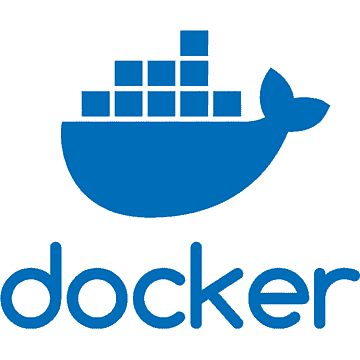
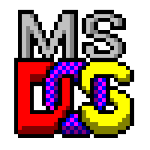
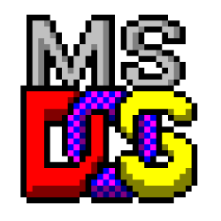

Marcin Cichy
Marcin Cichy - aspirujący do bycia programistą w języku Python, fan nowoczesnych technologii oraz starych komputerów.
Doświadczenie
Przez kilkanaście lat zajmowałem się projektowaniem, zarządzaniem infrastrukturą IT, jak również programowaniem laserów. Od zawsze interesowało mnie programowanie i ułatwianie życia dzięki rozwiązaniom programistycznym. Uczę się programowania w języku Python, a od niedawna wdrażam rozwiązania oparte na AI.



 

Zainteresowania
Komputery, nowoczesne technologie. Stary sprzęt komputerowy (Amiga, Commodore C-64). Elektronika. Raspberry PI. Literatura (książki historyczne).
Kontakt
- E-mail: marcin-cichy [at] wp [dot] pl
- LinkedIn: linkedin.com/in/marcincichy
- GitLab: gitlab.com/MarcinCichy
- GitHub: github.com/MarcinCichy